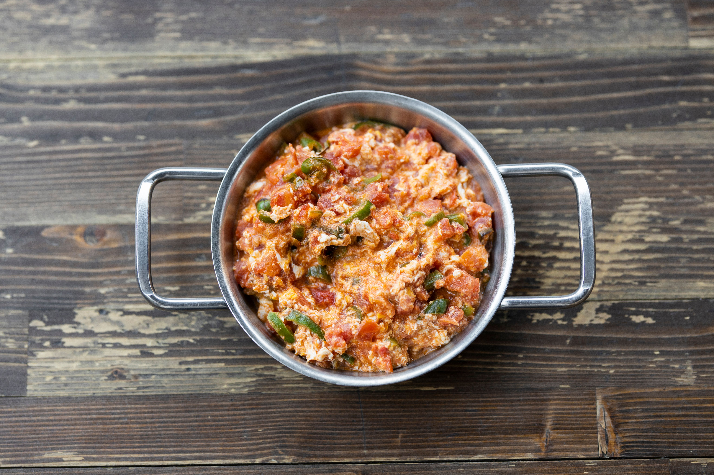

Credit:Engin Akyurt
Menemen is a turkish staple, made from eggs and vegetables, and usually for breakfast.
However, once you taste this simple but exquisite dish,
You will want to eat it for breakfast, lunch and dinner!
In this recipe, we will learn how to make this one lifesaver of a dish!
Heat olive oil in a skillet over medium heat. Add onion, bell pepper, chiles, and red pepper flakes.
Cook and stir until onions are soft and translucent, 5 to 6 minutes.
Add garlic and cook until fragrant, about 1 minute.
Add tomatoes, with their juices, and season with salt and pepper.
Cook until tomatoes are softened, 4 to 6 minutes.
Add eggs to the skillet, tilting the skillet until eggs cover skillet completely.
Do not mix.
Cook until eggs are set, 3 to 5 minutes.
Top with basil and feta cheese.